Items
Alle 494 Items, die im Spiel vorkommen, mit Wirkung und Kaufpreis. Jedes Item hat eine eigene Seite mit allen Fundorten.
 AbwehrfederHebt die Vert.-Basispunkte eines Pokémon.300 ₽
AbwehrfederHebt die Vert.-Basispunkte eines Pokémon.300 ₽ AbyssplatteItem (Tragen) hebt Sp. Vert. von Perlu.2.000 ₽
AbyssplatteItem (Tragen) hebt Sp. Vert. von Perlu.2.000 ₽ AbysszahnItem (Tragen) hebt Sp. Angr. von Perlu.2.000 ₽
AbysszahnItem (Tragen) hebt Sp. Angr. von Perlu.2.000 ₽ AkibeereItem (Tragen) hebt Vert. bei phys. Attacke.20 ₽
AkibeereItem (Tragen) hebt Vert. bei phys. Attacke.20 ₽ AkkuItem (Tragen) hebt Angr. bei Elektro-Attacke.5.000 ₽
AkkuItem (Tragen) hebt Angr. bei Elektro-Attacke.5.000 ₽ AltbernsteinBernstein mit den Genen eines antiken Pokémon.
AltbernsteinBernstein mit den Genen eines antiken Pokémon. Alte KroneAlte Krone von hohem Wert.
Alte KroneAlte Krone von hohem Wert.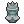
Alte StatueAlte Statue von hohem Wert.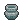
Alte VaseUralte Vase von hohem Wert.- Alter DukatAlte Goldmünze von sehr hohem Wert.60.000 ₽
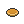
Alter HellerAlte Kupfermünze von großem Wert.- Alter ReifAlter Armreif von hohem Wert.
- Alter TalerAlte Silbermünze von hohem Wert.
 AmrenabeereItem (Tragen) bewirkt Selbstheilung bei Paralyse.20 ₽
AmrenabeereItem (Tragen) bewirkt Selbstheilung bei Paralyse.20 ₽ AngelDamit kannst du in jedem Gewässer Pokémon angeln.
AngelDamit kannst du in jedem Gewässer Pokémon angeln. AngriffplusHebt die Volltrefferquote für einen Kampf.1.000 ₽
AngriffplusHebt die Volltrefferquote für einen Kampf.1.000 ₽ AP-PlusHebt die maximale Anzahl der AP einer Attacke.10.000 ₽
AP-PlusHebt die maximale Anzahl der AP einer Attacke.10.000 ₽ AP-TopMaximiert die Anzahl der AP einer Attacke.10.000 ₽
AP-TopMaximiert die Anzahl der AP einer Attacke.10.000 ₽ AschetascheBeutel zum Sammeln und Aufbewahren von Vulkanasche.
AschetascheBeutel zum Sammeln und Aufbewahren von Vulkanasche. ÄtherFüllt AP einer Attacke um 10 Punkte auf.1.200 ₽
ÄtherFüllt AP einer Attacke um 10 Punkte auf.1.200 ₽ AufweckerWeckt schlafendes Pokémon auf.200 ₽
AufweckerWeckt schlafendes Pokémon auf.200 ₽ AuroraticketFahrkarte für das Schiff zur Entstehungsinsel.
AuroraticketFahrkarte für das Schiff zur Entstehungsinsel. AzurflöteEine Flöte. Ihre Töne scheinen nicht von dieser Welt.
AzurflöteEine Flöte. Ihre Töne scheinen nicht von dieser Welt.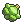
BabiribeereItem (Tragen) mildert sehr effektive Stahl-Attacke.20 ₽ BannstickerItem (Tragen) verstärkt Geist-Attacken.3.000 ₽
BannstickerItem (Tragen) verstärkt Geist-Attacken.3.000 ₽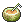
BeerensaftReiner Fruchtsaft, der die KP um 20 Punkte auffüllt.100 ₽ BeleberBelebt Pokémon und füllt die KP zur Hälfte wieder auf.2.000 ₽
BeleberBelebt Pokémon und füllt die KP zur Hälfte wieder auf.2.000 ₽ Berserk-GenHebt Angr. stark, stiftet aber dauerhaft Verwirrung.20 ₽
Berserk-GenHebt Angr. stark, stiftet aber dauerhaft Verwirrung.20 ₽ BeulenhelmItem (Tragen) schadet Gegnern bei Berührung.50.000 ₽
BeulenhelmItem (Tragen) schadet Gegnern bei Berührung.50.000 ₽ BlattsteinLöst bei bestimmten Pokémon die Entwicklung aus.10.000 ₽
BlattsteinLöst bei bestimmten Pokémon die Entwicklung aus.10.000 ₽ Blauer SchalItem (Tragen) hebt Schön.-Wert für den Wettbewerb.100 ₽
Blauer SchalItem (Tragen) hebt Schön.-Wert für den Wettbewerb.100 ₽ BlendpuderItem (Tragen) senkt die Genauigkeit des Gegners.30.000 ₽
BlendpuderItem (Tragen) senkt die Genauigkeit des Gegners.30.000 ₽ BootsticketEin Ticket zur Fahrt auf einer Fähre.
BootsticketEin Ticket zur Fahrt auf einer Fähre. BriefBrief an Troy vom Präsidenten der Devon Corp.
BriefBrief an Troy vom Präsidenten der Devon Corp. BuntschwingeMystische Regenbogen-Feder.
BuntschwingeMystische Regenbogen-Feder. BurleobeereItem (Tragen) mildert sehr effektive Unlicht-Attacke.20 ₽
BurleobeereItem (Tragen) mildert sehr effektive Unlicht-Attacke.20 ₽ CarbonHebt den Init.-Wert eines Pokémon.10.000 ₽
CarbonHebt den Init.-Wert eines Pokémon.10.000 ₽ ChiaribeereItem (Tragen) mildert sehr effektive Gestein-Attacke.20 ₽
ChiaribeereItem (Tragen) mildert sehr effektive Gestein-Attacke.20 ₽ Devon-ScopeGerät von Devon, das unsichtbare Pokémon entlarvt.
Devon-ScopeGerät von Devon, das unsichtbare Pokémon entlarvt. Devon-WarenPäckchen, das Maschinenteile von Devon enthält.
Devon-WarenPäckchen, das Maschinenteile von Devon enthält. DomfossilFossil eines Pokémon, das am Meeresgrund lebte.
DomfossilFossil eines Pokémon, das am Meeresgrund lebte. DonnersteinLöst bei bestimmten Pokémon die Entwicklung aus.10.000 ₽
DonnersteinLöst bei bestimmten Pokémon die Entwicklung aus.10.000 ₽- DrachenhautSchuppe eines Drachen. Löst eine Entwicklung aus.20.000 ₽
 DrachenzahnItem (Tragen) verstärkt Drachen-Attacken.3.000 ₽
DrachenzahnItem (Tragen) verstärkt Drachen-Attacken.3.000 ₽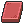
DracotafelSteintafel (Tragen) verstärkt Drachen-Attacken.1.000 ₽ DubiosdiscDubiose Scheibe. Löst eine Entwicklung aus.20.000 ₽
DubiosdiscDubiose Scheibe. Löst eine Entwicklung aus.20.000 ₽ DuftpilzEin seltener Pilz von hohem Wert.15.000 ₽
DuftpilzEin seltener Pilz von hohem Wert.15.000 ₽ DunkelbriefBrief (Tragen) mit Zwirrlicht-Aufdruck.50 ₽
DunkelbriefBrief (Tragen) mit Zwirrlicht-Aufdruck.50 ₽ DurinbeereSäe Pokériegel-Zutat in Lehmboden, damit Durin wächst.20 ₽
DurinbeereSäe Pokériegel-Zutat in Lehmboden, damit Durin wächst.20 ₽ DüsterumhangGeisterhafter Umhang. Löst eine Entwicklung aus.20.000 ₽
DüsterumhangGeisterhafter Umhang. Löst eine Entwicklung aus.20.000 ₽ EilbriefBrief (Tragen) mit Magnetilo-Aufdruck.50 ₽
EilbriefBrief (Tragen) mit Magnetilo-Aufdruck.50 ₽ EilradKlapprad, das doppelt so schnell ist wie ein Fußgänger.
EilradKlapprad, das doppelt so schnell ist wie ein Fußgänger. EipfelbeereItem (Tragen) erlaubt Erstschlag in Notlage.20 ₽
EipfelbeereItem (Tragen) erlaubt Erstschlag in Notlage.20 ₽ EisbrockenItem (Tragen) verlängert kaltes Wetter.8.000 ₽
EisbrockenItem (Tragen) verlängert kaltes Wetter.8.000 ₽ EisenHebt den Vert.-Wert eines Pokémon.10.000 ₽
EisenHebt den Vert.-Wert eines Pokémon.10.000 ₽ EisenkugelItem (Tragen) senkt Init. und macht anfällig für Boden.20.000 ₽
EisenkugelItem (Tragen) senkt Init. und macht anfällig für Boden.20.000 ₽ EisentafelSteintafel (Tragen) verstärkt Stahl-Attacken.1.000 ₽
EisentafelSteintafel (Tragen) verstärkt Stahl-Attacken.1.000 ₽ EisheilerTaut Pokémon wieder auf.200 ₽
EisheilerTaut Pokémon wieder auf.200 ₽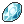
EissteinLöst bei bestimmten Pokémon die Entwicklung aus.10.000 ₽ Elektro-SamenItem (Tragen) hebt Vert. auf Elektrofeld einmalig.20.000 ₽
Elektro-SamenItem (Tragen) hebt Vert. auf Elektrofeld einmalig.20.000 ₽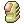
ElixierFüllt alle AP eines Pokémon um 10 Punkte auf.3.000 ₽ Eneco-RuteErmöglicht Flucht im Kampf gegen wilde Pokémon.100 ₽
Eneco-RuteErmöglicht Flucht im Kampf gegen wilde Pokémon.100 ₽- EnergiekrautEin Item zum einmaligen Tragen.30.000 ₽
 EnergiestaubEin bitteres Pulver, das die KP um 60 Punkte auffüllt.500 ₽
EnergiestaubEin bitteres Pulver, das die KP um 60 Punkte auffüllt.500 ₽ EnigmabeereItem (Tragen) heilt bei sehr effektiver Attacke.20 ₽
EnigmabeereItem (Tragen) heilt bei sehr effektiver Attacke.20 ₽ EnigmabeereSäe Pokériegel-Zutat in Lehmboden, damit ein Rätsel wächst.20 ₽
EnigmabeereSäe Pokériegel-Zutat in Lehmboden, damit ein Rätsel wächst.20 ₽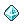
EP-Bonbon LGibt eine große Menge EP.3.000 ₽ EP-PinErhöht die im Kampf erhaltenen EP.
EP-PinErhöht die im Kampf erhaltenen EP. EP-TeilerItem (Tragen) teilt die Kampf-EP.
EP-TeilerItem (Tragen) teilt die Kampf-EP. Ernst-MinzeMinze, die alle Statuswerte gleich schnell steigert.20.000 ₽
Ernst-MinzeMinze, die alle Statuswerte gleich schnell steigert.20.000 ₽ EspritfederHebt die Sp. Vert.-Basispunkte eines Pokémon.300 ₽
EspritfederHebt die Sp. Vert.-Basispunkte eines Pokémon.300 ₽ EvolithHebt Vert. und Sp. Vert. unentwickelter Pokémon.50.000 ₽
EvolithHebt Vert. und Sp. Vert. unentwickelter Pokémon.50.000 ₽ Ewiges EisItem (Tragen) verstärkt Eis-Attacken.3.000 ₽
Ewiges EisItem (Tragen) verstärkt Eis-Attacken.3.000 ₽ EwigsteinWundersamer Stein zum Tragen. Bewirkt Entwicklungsstopp.3.000 ₽
EwigsteinWundersamer Stein zum Tragen. Bewirkt Entwicklungsstopp.3.000 ₽ ExpertengurtItem (Tragen) verstärkt sehr effektive Attacken.30.000 ₽
ExpertengurtItem (Tragen) verstärkt sehr effektive Attacken.30.000 ₽ FahrradKlapprad, das schneller als Turbotreter ist.
FahrradKlapprad, das schneller als Turbotreter ist.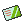
FahrscheinTicket für Magnetzug. FatumknotenItem (Tragen) verliebt auch den Gegner.20.000 ₽
FatumknotenItem (Tragen) verliebt auch den Gegner.20.000 ₽ FeendauneItem (Tragen) verstärkt Fee-Attacken.1.000 ₽
FeendauneItem (Tragen) verstärkt Fee-Attacken.1.000 ₽ FeenjuwelJuwel (Tragen) verstärkt einmalig Fee-Attacken.15.000 ₽
FeenjuwelJuwel (Tragen) verstärkt einmalig Fee-Attacken.15.000 ₽ FeentafelSteintafel (Tragen) verstärkt Fee-Attacken.1.000 ₽
FeentafelSteintafel (Tragen) verstärkt Fee-Attacken.1.000 ₽ FehlschlagschutzItem (Tragen) hebt Init. nach verfehlter Attacke.30.000 ₽
FehlschlagschutzItem (Tragen) hebt Init. nach verfehlter Attacke.30.000 ₽ FeldbeschichtungItem (Tragen) verlängert das aktive Feld.15.000 ₽
FeldbeschichtungItem (Tragen) verlängert das aktive Feld.15.000 ₽ FeuerheilerHeilt Verbrennung eines Pokémon.200 ₽
FeuerheilerHeilt Verbrennung eines Pokémon.200 ₽ FeuersteinLöst bei bestimmten Pokémon die Entwicklung aus.10.000 ₽
FeuersteinLöst bei bestimmten Pokémon die Entwicklung aus.10.000 ₽- FinsterballBall fängt besser an dunklen Orten und bei Nacht.1.000 ₽
 FinstersteinLöst bei bestimmten Pokémon die Entwicklung aus.10.000 ₽
FinstersteinLöst bei bestimmten Pokémon die Entwicklung aus.10.000 ₽ FlinkfederHebt die Init.-Basispunkte eines Pokémon.300 ₽
FlinkfederHebt die Init.-Basispunkte eines Pokémon.300 ₽ FlinkklaueItem (Tragen) hebt die Erstschlagquote.8.000 ₽
FlinkklaueItem (Tragen) hebt die Erstschlagquote.8.000 ₽ FlottballBall wirkt am besten in der ersten Runde.1.000 ₽
FlottballBall wirkt am besten in der ersten Runde.1.000 ₽ FlottstaubItem (Tragen) erhöht Init.-Wert von Ditto.1.000 ₽
FlottstaubItem (Tragen) erhöht Init.-Wert von Ditto.1.000 ₽ FluchtknopfItem (Tragen) wechselt den Träger bei Treffer aus.30.000 ₽
FluchtknopfItem (Tragen) wechselt den Träger bei Treffer aus.30.000 ₽ FluchtseilErmöglicht die Flucht aus Höhlen oder Ähnlichem.100 ₽
FluchtseilErmöglicht die Flucht aus Höhlen oder Ähnlichem.100 ₽ FlugjuwelJuwel (Tragen) verstärkt einmalig Flug-Attacken.15.000 ₽
FlugjuwelJuwel (Tragen) verstärkt einmalig Flug-Attacken.15.000 ₽- FoepasbeereItem (Tragen) mildert sehr effektive Wasser-Attacke.20 ₽
 Fokus-BandItem (Tragen) kann manchmal K.O. verhindern.10.000 ₽
Fokus-BandItem (Tragen) kann manchmal K.O. verhindern.10.000 ₽ FokusgurtBei vollen KP überlebt der Träger einen K.o. mit 1 KP.50.000 ₽
FokusgurtBei vollen KP überlebt der Träger einen K.o. mit 1 KP.50.000 ₽ Forsch-MinzeMinze, die Sp. Vert. schneller, Init. langsamer steigert.20.000 ₽
Forsch-MinzeMinze, die Sp. Vert. schneller, Init. langsamer steigert.20.000 ₽ FragiabeereItem (Tragen) bewirkt Selbstheilung bei Verbrennung.20 ₽
FragiabeereItem (Tragen) bewirkt Selbstheilung bei Verbrennung.20 ₽ Frech-MinzeMinze, die Angr. schneller, Sp. Vert. langsamer steigert.20.000 ₽
Frech-MinzeMinze, die Angr. schneller, Sp. Vert. langsamer steigert.20.000 ₽ Froh-MinzeMinze, die Init. schneller, Sp. Angr. langsamer steigert.20.000 ₽
Froh-MinzeMinze, die Init. schneller, Sp. Angr. langsamer steigert.20.000 ₽ FrosttafelSteintafel (Tragen) verstärkt Eis-Attacken.1.000 ₽
FrosttafelSteintafel (Tragen) verstärkt Eis-Attacken.1.000 ₽ FunkelsteinLöst bei bestimmten Pokémon die Entwicklung aus.10.000 ₽
FunkelsteinLöst bei bestimmten Pokémon die Entwicklung aus.10.000 ₽ GegengiftHeilt Vergiftung eines Pokémon.200 ₽
GegengiftHeilt Vergiftung eines Pokémon.200 ₽ GeheimtrankHeilt jedes Pokémon vollständig.
GeheimtrankHeilt jedes Pokémon vollständig. Gelbe FlöteEine gläserne Flöte, die verwirrte Pokémon heilt.20 ₽
Gelbe FlöteEine gläserne Flöte, die verwirrte Pokémon heilt.20 ₽ Gelber SchalItem (Tragen) hebt Stärke-Wert für den Wettbewerb.100 ₽
Gelber SchalItem (Tragen) hebt Stärke-Wert für den Wettbewerb.100 ₽ GelbstückScherbe eines antiken Relikts von geringem Wert.1.000 ₽
GelbstückScherbe eines antiken Relikts von geringem Wert.1.000 ₽- GeniefederHebt die Sp. Angr.-Basispunkte eines Pokémon.300 ₽
 Gezinkter WürfelWürfelt hohe Zahlen.20.000 ₽
Gezinkter WürfelWürfelt hohe Zahlen.20.000 ₽ GiefebeereItem (Tragen) füllt KP auf, bewirkt evtl. Verwirrung.20 ₽
GiefebeereItem (Tragen) füllt KP auf, bewirkt evtl. Verwirrung.20 ₽ GiftschleimFüllt KP von Gift-Pokémon auf, schadet anderen.10.000 ₽
GiftschleimFüllt KP von Gift-Pokémon auf, schadet anderen.10.000 ₽ GiftstichItem (Tragen) verstärkt Gift-Attacken.3.000 ₽
GiftstichItem (Tragen) verstärkt Gift-Attacken.3.000 ₽ GischtglockeErzeugt ein hallendes Läuten.
GischtglockeErzeugt ein hallendes Läuten. GlattbrockenItem (Tragen) verlängert Sandsturm.8.000 ₽
GlattbrockenItem (Tragen) verlängert Sandsturm.8.000 ₽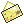
GlitzerbriefBrief (Tragen) mit Pikachu-Aufdruck.50 ₽ Glücks-EiItem (Tragen) erhöht im Kampf erhaltene EP.10.000 ₽
Glücks-EiItem (Tragen) erhöht im Kampf erhaltene EP.10.000 ₽ GlücksrauchDoppelter Geldbetrag, wenn Träger am Kampf teilnimmt.11.000 ₽
GlücksrauchDoppelter Geldbetrag, wenn Träger am Kampf teilnimmt.11.000 ₽ GoldzähneVerlorenes Gebiss des Wärters der Safari-Zone.
GoldzähneVerlorenes Gebiss des Wärters der Safari-Zone. GranabeereMacht freundlicher, senkt KP-Basiswert.20 ₽
GranabeereMacht freundlicher, senkt KP-Basiswert.20 ₽ GranitsteinItem (Tragen) verstärkt Gestein-Attacken.3.000 ₽
GranitsteinItem (Tragen) verstärkt Gestein-Attacken.3.000 ₽ GrarzbeereItem (Tragen) mildert sehr effektive Gift-Attacke.20 ₽
GrarzbeereItem (Tragen) mildert sehr effektive Gift-Attacke.20 ₽ GriffklaueItem (Tragen) verlängert Binde-Attacken.10.000 ₽
GriffklaueItem (Tragen) verlängert Binde-Attacken.10.000 ₽ GrindobeereItem (Tragen) mildert sehr effektive Pflanzen-Attacke.20 ₽
GrindobeereItem (Tragen) mildert sehr effektive Pflanzen-Attacke.20 ₽ GroßlinseItem (Tragen) erhöht die Genauigkeit.20.000 ₽
GroßlinseItem (Tragen) erhöht die Genauigkeit.20.000 ₽ GroßwurzelVerstärkt KP-stehlende Attacken.10.000 ₽
GroßwurzelVerstärkt KP-stehlende Attacken.10.000 ₽ Grüner SchalItem (Tragen) hebt Klug.-Wert für den Wettbewerb.100 ₽
Grüner SchalItem (Tragen) hebt Klug.-Wert für den Wettbewerb.100 ₽ GrünstückScherbe eines antiken Relikts von geringem Wert.1.000 ₽
GrünstückScherbe eines antiken Relikts von geringem Wert.1.000 ₽ GS-BallEin geheimnisvoller Ball.
GS-BallEin geheimnisvoller Ball. HackattackItem (Tragen) verstärkt Flug-Attacken.3.000 ₽
HackattackItem (Tragen) verstärkt Flug-Attacken.3.000 ₽ HafenbriefBrief (Tragen) mit Wingull-Aufdruck.50 ₽
HafenbriefBrief (Tragen) mit Wingull-Aufdruck.50 ₽ Hart-MinzeMinze, die Angr. schneller, Sp. Angr. langsamer steigert.20.000 ₽
Hart-MinzeMinze, die Angr. schneller, Sp. Angr. langsamer steigert.20.000 ₽ Hastig-MinzeMinze, die Init. schneller, Vert. langsamer steigert.20.000 ₽
Hastig-MinzeMinze, die Init. schneller, Vert. langsamer steigert.20.000 ₽ HeilballBall, der gefangene Pokémon heilt und ihre KP auffüllt.300 ₽
HeilballBall, der gefangene Pokémon heilt und ihre KP auffüllt.300 ₽ HeilfederHebt die KP-Basispunkte eines Pokémon.300 ₽
HeilfederHebt die KP-Basispunkte eines Pokémon.300 ₽ HeilpuderEin bitteres Pulver, das alle Statusprobleme heilt.300 ₽
HeilpuderEin bitteres Pulver, das alle Statusprobleme heilt.300 ₽ Heiß-OrbItem (Tragen) fügt dem Träger im Kampf Verbrennung zu.15.000 ₽
Heiß-OrbItem (Tragen) fügt dem Träger im Kampf Verbrennung zu.15.000 ₽ HeißbrockenItem (Tragen) verlängert Sonnentag.8.000 ₽
HeißbrockenItem (Tragen) verlängert Sonnentag.8.000 ₽ HelixfossilFossil eines Pokémon, das am Meeresgrund lebte.
HelixfossilFossil eines Pokémon, das am Meeresgrund lebte.- HerzkonfektEin süßer Schokosnack, der die KP um 20 Punkte auffüllt.3.000 ₽
 HerzschuppeHübsche Schuppe, höchst begehrt bei Sammlern.100 ₽
HerzschuppeHübsche Schuppe, höchst begehrt bei Sammlern.100 ₽ HibisbeereItem (Tragen) mildert sehr effektive Fee-Attacke.20 ₽
HibisbeereItem (Tragen) mildert sehr effektive Fee-Attacke.20 ₽ HimmihbeereSäe Pokériegel-Zutat in Lehmboden, damit Himmih wächst.20 ₽
HimmihbeereSäe Pokériegel-Zutat in Lehmboden, damit Himmih wächst.20 ₽ Hitzig-MinzeMinze, die Sp. Angr. schneller, Sp. Vert. langsamer steigert.20.000 ₽
Hitzig-MinzeMinze, die Sp. Angr. schneller, Sp. Vert. langsamer steigert.20.000 ₽ HoennticketFahrkarte für die einfache Überfahrt nach Hoenn.
HoennticketFahrkarte für die einfache Überfahrt nach Hoenn. HolzkohleItem (Tragen) verstärkt Feuer-Attacken.3.000 ₽
HolzkohleItem (Tragen) verstärkt Feuer-Attacken.3.000 ₽- HonigSüßer Honig, dessen Duft wilde Pokémon anlockt.900 ₽
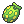
HonmelbeereMacht freundlicher, senkt Sp. Angr.-Basiswert.20 ₽ HyperballBall mit hoher Erfolgsquote. Besser als ein Superball.800 ₽
HyperballBall mit hoher Erfolgsquote. Besser als ein Superball.800 ₽ HyperheilerBeseitigt alle Statusprobleme eines Pokémon.400 ₽
HyperheilerBeseitigt alle Statusprobleme eines Pokémon.400 ₽ HypertrankFüllt die KP eines Pokémon um 120 Punkte auf.1.500 ₽
HypertrankFüllt die KP eines Pokémon um 120 Punkte auf.1.500 ₽ IndigostückScherbe eines antiken Relikts von geringem Wert.1.000 ₽
IndigostückScherbe eines antiken Relikts von geringem Wert.1.000 ₽ ItemradarEin Gerät, das verborgene Items via Schallwellen ortet.
ItemradarEin Gerät, das verborgene Items via Schallwellen ortet. JabocabeereItem (Tragen) schadet dem Gegner bei phys. Attacke.20 ₽
JabocabeereItem (Tragen) schadet dem Gegner bei phys. Attacke.20 ₽ JonagobeereItem (Tragen) füllt AP im Kampf um 10 Punkte auf.20 ₽
JonagobeereItem (Tragen) füllt AP im Kampf um 10 Punkte auf.20 ₽ KalziumHebt den Sp. Angr.-Wert eines Pokémon.10.000 ₽
KalziumHebt den Sp. Angr.-Wert eines Pokémon.10.000 ₽ KampfknochenItem (Tragen) erhöht Angr.-Wert v. Tragosso/Knogga.1.000 ₽
KampfknochenItem (Tragen) erhöht Angr.-Wert v. Tragosso/Knogga.1.000 ₽ KelleröffnerSchlüssel für eine Tür in der Dukatia-Passage.
KelleröffnerSchlüssel für eine Tür in der Dukatia-Passage. KerzalbeereItem (Tragen) mildert sehr effektive Elektro-Attacke.20 ₽
KerzalbeereItem (Tragen) mildert sehr effektive Elektro-Attacke.20 ₽ King-SteinItem (Tragen) kann Gegner zurückweichen lassen.10.000 ₽
King-SteinItem (Tragen) kann Gegner zurückweichen lassen.10.000 ₽ KiroyabeereItem (Tragen) mildert sehr effektive Eis-Attacke.20 ₽
KiroyabeereItem (Tragen) mildert sehr effektive Eis-Attacke.20 ₽ KiwanbeereSäe Pokériegel-Zutat in Lehmboden, damit Kiwan wächst.20 ₽
KiwanbeereSäe Pokériegel-Zutat in Lehmboden, damit Kiwan wächst.20 ₽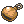
KlarglockeErzeugt ein angenehmes Läuten.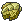
KlauenfossilFossil eines uralten Pokémon, das in der Tiefsee lebte. Kleiner EP-TeilerItem (Tragen) teilt die Kampf-EP.6.000 ₽
Kleiner EP-TeilerItem (Tragen) teilt die Kampf-EP.6.000 ₽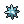
KlettdornItem (Tragen) schadet dem Träger jede Runde.10.000 ₽ KnolleItem (Tragen) hebt Sp. Angr. bei Wasser-Attacke.5.000 ₽
KnolleItem (Tragen) hebt Sp. Angr. bei Wasser-Attacke.5.000 ₽ KoakobeereItem (Tragen) mildert sehr effektive Feuer-Attacke.20 ₽
KoakobeereItem (Tragen) mildert sehr effektive Feuer-Attacke.20 ₽ KobabeereItem (Tragen) mildert sehr effektive Flug-Attacke.20 ₽
KobabeereItem (Tragen) mildert sehr effektive Flug-Attacke.20 ₽ KometstückSplitter aus dem All von sehr hohem Wert.25.000 ₽
KometstückSplitter aus dem All von sehr hohem Wert.25.000 ₽ KopierkrautItem (Tragen) spiegelt gegnerische Statuserhöhung.30.000 ₽
KopierkrautItem (Tragen) spiegelt gegnerische Statuserhöhung.30.000 ₽ KP-PlusHebt die KP eines Pokémon.10.000 ₽
KP-PlusHebt die KP eines Pokémon.10.000 ₽ KraftfederHebt die Angr.-Basispunkte eines Pokémon.300 ₽
KraftfederHebt die Angr.-Basispunkte eines Pokémon.300 ₽ KraftwurzelEine Wurzel, die die KP um 120 Punkte auffüllt.1.200 ₽
KraftwurzelEine Wurzel, die die KP um 120 Punkte auffüllt.1.200 ₽ KrambobeereItem (Tragen) hebt einen Statuswert in einer Notlage.20 ₽
KrambobeereItem (Tragen) hebt einen Statuswert in einer Notlage.20 ₽ KrummlöffelItem (Tragen) verstärkt Psycho-Attacken.3.000 ₽
KrummlöffelItem (Tragen) verstärkt Psycho-Attacken.3.000 ₽ KugelblitzItem (Tragen) erhöht Pikachus Sp. Angr.1.000 ₽
KugelblitzItem (Tragen) erhöht Pikachus Sp. Angr.1.000 ₽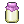
Kuhmuh-MilchMilch, die die KP um 100 Punkte auffüllt.600 ₽ Kühn-MinzeMinze, die Vert. schneller, Angr. langsamer steigert.20.000 ₽
Kühn-MinzeMinze, die Vert. schneller, Angr. langsamer steigert.20.000 ₽ KunstradKlapprad ermöglicht Sprünge und Wheelies.
KunstradKlapprad ermöglicht Sprünge und Wheelies.- KüstensalzSalz, das sich tief in der Küsten-Höhle befand.20 ₽
 KüstenschaleMuschelschale, die sich in der Küstenhöhle befand.20 ₽
KüstenschaleMuschelschale, die sich in der Küstenhöhle befand.20 ₽ LabrusbeereMacht freundlicher, senkt Sp. Vert.-Basiswert.20 ₽
LabrusbeereMacht freundlicher, senkt Sp. Vert.-Basiswert.20 ₽ LagerschlüsselSchlüssel zum Lagerraum auf dem Schiffswrack.
LagerschlüsselSchlüssel zum Lagerraum auf dem Schiffswrack. LahmrauchItem (Tragen) lässt den Träger langsamer agieren.5.000 ₽
LahmrauchItem (Tragen) lässt den Träger langsamer agieren.5.000 ₽ LansatbeereItem (Tragen) hebt Volltrefferquote in einer Notlage.20 ₽
LansatbeereItem (Tragen) hebt Volltrefferquote in einer Notlage.20 ₽ Lasch-MinzeMinze, die Vert. schneller, Sp. Vert. langsamer steigert.20.000 ₽
Lasch-MinzeMinze, die Vert. schneller, Sp. Vert. langsamer steigert.20.000 ₽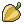
LatchibeereItem (Tragen) schwächt eine Normal-Attacke.20 ₽ LauchstangeItem (Tragen) erhöht Volltrefferquote von Porenta.1.000 ₽
LauchstangeItem (Tragen) erhöht Volltrefferquote von Porenta.1.000 ₽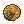
LavakeksEine regionale Spezialität. Heilt alle Statusprobleme.350 ₽ LaxrauchItem (Tragen) senkt Genauigkeit des Gegners.5.000 ₽
LaxrauchItem (Tragen) senkt Genauigkeit des Gegners.5.000 ₽ Leben-OrbItem (Tragen) stärkt Attacken, kostet aber KP.50.000 ₽
Leben-OrbItem (Tragen) stärkt Attacken, kostet aber KP.50.000 ₽- LeuchtmoosItem (Tragen) hebt Sp. Vert. bei Wasser-Attacke.5.000 ₽
 LeuchtsteinLöst bei bestimmten Pokémon die Entwicklung aus.10.000 ₽
LeuchtsteinLöst bei bestimmten Pokémon die Entwicklung aus.10.000 ₽ LichtlehmItem (Tragen) verlängert Schutzwände.20.000 ₽
LichtlehmItem (Tragen) verlängert Schutzwände.20.000 ₽ LiftöffnerSchlüssel für Aufzug im Versteck von Team Rocket.
LiftöffnerSchlüssel für Aufzug im Versteck von Team Rocket. Locker-MinzeMinze, die Vert. schneller, Init. langsamer steigert.20.000 ₽
Locker-MinzeMinze, die Vert. schneller, Init. langsamer steigert.20.000 ₽ LockparfümLockt 100 Schritte lang wilde Pokémon an.400 ₽
LockparfümLockt 100 Schritte lang wilde Pokémon an.400 ₽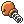
Lucky PunchItem (Tragen) erhöht Chaneiras Volltrefferquote.1.000 ₽ LuxusballBehaglicher Ball, der Pokémon freundlicher macht.3.000 ₽
LuxusballBehaglicher Ball, der Pokémon freundlicher macht.3.000 ₽ LydzibeereItem (Tragen) hebt Angr.-Wert in einer Notlage.20 ₽
LydzibeereItem (Tragen) hebt Angr.-Wert in einer Notlage.20 ₽ MachobandItem (Tragen) fördert Wachstum, senkt Init.3.000 ₽
MachobandItem (Tragen) fördert Wachstum, senkt Init.3.000 ₽ MagmaemblemEmblem in der Form von Team Magmas Abzeichen.
MagmaemblemEmblem in der Form von Team Magmas Abzeichen.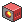
MagmaisiererMagma-Schachtel. Löst eine Entwicklung aus.20.000 ₽ MagnetItem (Tragen) verstärkt Elektro-Attacken.3.000 ₽
MagnetItem (Tragen) verstärkt Elektro-Attacken.3.000 ₽ Marmoria-KräckerBeseitigt alle Statusprobleme eines Pokémon.250 ₽
Marmoria-KräckerBeseitigt alle Statusprobleme eines Pokémon.250 ₽ MaronbeereItem (Tragen) weckt schlafendes Pokémon im Kampf.20 ₽
MaronbeereItem (Tragen) weckt schlafendes Pokémon im Kampf.20 ₽ Mäßig-MinzeMinze, die Sp. Angr. schneller, Angr. langsamer steigert.20.000 ₽
Mäßig-MinzeMinze, die Sp. Angr. schneller, Angr. langsamer steigert.20.000 ₽ MegablockStatusänderung wird für einen Kampf verhindert.1.500 ₽
MegablockStatusänderung wird für einen Kampf verhindert.1.500 ₽ MeisterballDer beste Ball. Fängt das Pokémon garantiert.
MeisterballDer beste Ball. Fängt das Pokémon garantiert. MentalkrautBefreit Pokémon von Binde-Effekten.10.000 ₽
MentalkrautBefreit Pokémon von Binde-Effekten.10.000 ₽ MetallmantelItem (Tragen) verstärkt Stahl-Attacken.20.000 ₽
MetallmantelItem (Tragen) verstärkt Stahl-Attacken.20.000 ₽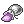
MetallstaubItem (Tragen) erhöht Vert.-Wert von Ditto.1.000 ₽ MeteoritMeteorit. Fundort: Meteorfälle.
MeteoritMeteorit. Fundort: Meteorfälle. Mild-MinzeMinze, die Sp. Angr. schneller, Vert. langsamer steigert.20.000 ₽
Mild-MinzeMinze, die Sp. Angr. schneller, Vert. langsamer steigert.20.000 ₽ MinibambussprossKleiner, seltener Bambusspross von geringem Wert.750 ₽
MinibambussprossKleiner, seltener Bambusspross von geringem Wert.750 ₽ MinipilzEin gemeiner Pilz von geringem Wert.500 ₽
MinipilzEin gemeiner Pilz von geringem Wert.500 ₽ MondsteinLöst bei bestimmten Pokémon die Entwicklung aus.3.000 ₽
MondsteinLöst bei bestimmten Pokémon die Entwicklung aus.3.000 ₽ MorbbeereSäe Pokériegel-Zutat in Lehmboden, damit Morb wächst.20 ₽
MorbbeereSäe Pokériegel-Zutat in Lehmboden, damit Morb wächst.20 ₽ MünzamulettDoppelter Geldbetrag, wenn Träger am Kampf teilnimmt.30.000 ₽
MünzamulettDoppelter Geldbetrag, wenn Träger am Kampf teilnimmt.30.000 ₽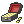
MünzkorbKann bis zu 9999 Münzen aufnehmen. Mutig-MinzeMinze, die Angr. schneller, Init. langsamer steigert.20.000 ₽
Mutig-MinzeMinze, die Angr. schneller, Init. langsamer steigert.20.000 ₽ MyrtilbeereSäe Pokériegel-Zutat in Lehmboden, damit Myrtil wächst.20 ₽
MyrtilbeereSäe Pokériegel-Zutat in Lehmboden, damit Myrtil wächst.20 ₽ Naiv-MinzeMinze, die Init. schneller, Sp. Vert. langsamer steigert.20.000 ₽
Naiv-MinzeMinze, die Init. schneller, Sp. Vert. langsamer steigert.20.000 ₽ NanabbeereSäe Pokériegel-Zutat in Lehmboden, damit Nanab wächst.20 ₽
NanabbeereSäe Pokériegel-Zutat in Lehmboden, damit Nanab wächst.20 ₽ NassbrockenItem (Tragen) verlängert Regentanz.8.000 ₽
NassbrockenItem (Tragen) verlängert Regentanz.8.000 ₽ NestballBall mit höherer Erfolgsquote bei schwachen Pokémon.1.000 ₽
NestballBall mit höherer Erfolgsquote bei schwachen Pokémon.1.000 ₽ NetzballBall fängt besser Pokémon des Typs Wasser und Käfer.1.000 ₽
NetzballBall fängt besser Pokémon des Typs Wasser und Käfer.1.000 ₽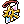
NeutralschmuckItem (Tragen) verhindert das Senken der Statuswerte.30.000 ₽ NirbebeereSäe Pokériegel-Zutat in Lehmboden, damit Nirbe wächst.20 ₽
NirbebeereSäe Pokériegel-Zutat in Lehmboden, damit Nirbe wächst.20 ₽ NormaljuwelJuwel (Tragen) verstärkt einmalig Normal-Attacken.15.000 ₽
NormaljuwelJuwel (Tragen) verstärkt einmalig Normal-Attacken.15.000 ₽ NuggetEin Barren aus purem Gold, der von hohem Wert ist.10.000 ₽
NuggetEin Barren aus purem Gold, der von hohem Wert ist.10.000 ₽ OffensivwesteItem (Tragen) hebt Sp. Vert., verbietet Status-Attacken.50.000 ₽
OffensivwesteItem (Tragen) hebt Sp. Vert., verbietet Status-Attacken.50.000 ₽ ?-ÖffnerSchlüssel zur Arena der Zinnoberinsel.
?-ÖffnerSchlüssel zur Arena der Zinnoberinsel. Ovaler SteinSeltsamer Stein. Löst eine Entwicklung aus.20.000 ₽
Ovaler SteinSeltsamer Stein. Löst eine Entwicklung aus.20.000 ₽ OvalpinErhöht die Chance auf Eier in der Pension.
OvalpinErhöht die Chance auf Eier in der Pension. PaketPaket! Supermarkt in Vertania an Prof. Eich.
PaketPaket! Supermarkt in Vertania an Prof. Eich. PallmbeereSäe Pokériegel-Zutat in Lehmboden, damit Pallm wächst.20 ₽
PallmbeereSäe Pokériegel-Zutat in Lehmboden, damit Pallm wächst.20 ₽ Para-HeilerHeilt Paralyse eines Pokémon.200 ₽
Para-HeilerHeilt Paralyse eines Pokémon.200 ₽ PerleEine hübsche Perle von geringem Wert.2.000 ₽
PerleEine hübsche Perle von geringem Wert.2.000 ₽ PerlenbriefBrief mit Abbildung des Pokémon, das ihn trägt.50 ₽
PerlenbriefBrief mit Abbildung des Pokémon, das ihn trägt.50 ₽ PersimbeereItem (Tragen) bewirkt Selbstheilung bei Verwirrung.20 ₽
PersimbeereItem (Tragen) bewirkt Selbstheilung bei Verwirrung.20 ₽ Pfiffig-MinzeMinze, die Vert. schneller, Sp. Angr. langsamer steigert.20.000 ₽
Pfiffig-MinzeMinze, die Vert. schneller, Sp. Angr. langsamer steigert.20.000 ₽ PirsifbeereItem (Tragen) bewirkt Selbstheilung bei Vergiftung.20 ₽
PirsifbeereItem (Tragen) bewirkt Selbstheilung bei Vergiftung.20 ₽ PokéballDamit fängst du wilde Pokémon.100 ₽
PokéballDamit fängst du wilde Pokémon.100 ₽ PokéflöteFlöte, deren Klang jedes schlafende Pokémon aufweckt.
PokéflöteFlöte, deren Klang jedes schlafende Pokémon aufweckt. Pokémon-BoxGerät, das Zugriff auf das Lagerungssystem gibt.
Pokémon-BoxGerät, das Zugriff auf das Lagerungssystem gibt.- Pokémon-KokeshiHolzspielzeug in Form eines Pokémon.2.000 ₽
 PoképuppeErmöglicht Flucht im Kampf gegen wilde Pokémon.300 ₽
PoképuppeErmöglicht Flucht im Kampf gegen wilde Pokémon.300 ₽ PokériegelboxBox für Pokériegel, die im Beerenmixer hergestellt werden.
PokériegelboxBox für Pokériegel, die im Beerenmixer hergestellt werden. PokéwedelErmöglicht Flucht im Kampf gegen wilde Pokémon.100 ₽
PokéwedelErmöglicht Flucht im Kampf gegen wilde Pokémon.100 ₽ PrachtfederEine schöne, aber gewöhnliche Feder von geringem Wert.1.000 ₽
PrachtfederEine schöne, aber gewöhnliche Feder von geringem Wert.1.000 ₽- PremierballSeltener Ball, als Reminiszenz an irgendein Ereignis.20 ₽
 ProfiangelEine recht gute Angel zum Fischen von Pokémon.
ProfiangelEine recht gute Angel zum Fischen von Pokémon.- ProteinHebt den Angr.-Wert eines Pokémon.10.000 ₽
 PrunusbeereItem (Tragen) bewirkt Selbstheilung bei Statusproblem.20 ₽
PrunusbeereItem (Tragen) bewirkt Selbstheilung bei Statusproblem.20 ₽ Psycho-SamenItem (Tragen) hebt Sp. Vert. auf Psychofeld einmalig.20.000 ₽
Psycho-SamenItem (Tragen) hebt Sp. Vert. auf Psychofeld einmalig.20.000 ₽ PuderdöschenGlas für Beeren-Puder der Beerenmühle.
PuderdöschenGlas für Beeren-Puder der Beerenmühle. PudersandItem (Tragen) verstärkt Boden-Attacken.3.000 ₽
PudersandItem (Tragen) verstärkt Boden-Attacken.3.000 ₽- PurpurstückScherbe eines antiken Relikts von geringem Wert.1.000 ₽
 PyapabeereItem (Tragen) mildert sehr effektive Psycho-Attacke.20 ₽
PyapabeereItem (Tragen) mildert sehr effektive Psycho-Attacke.20 ₽ QualotbeereMacht freundlicher, senkt Vert.-Basiswert.20 ₽
QualotbeereMacht freundlicher, senkt Vert.-Basiswert.20 ₽ R1-SchlüsselSchlüssel zur Tür einer Kabine auf dem Schiffswrack.
R1-SchlüsselSchlüssel zur Tür einer Kabine auf dem Schiffswrack. R2-SchlüsselSchlüssel zur Tür einer Kabine auf dem Schiffswrack.
R2-SchlüsselSchlüssel zur Tür einer Kabine auf dem Schiffswrack. R4-SchlüsselSchlüssel zur Tür einer Kabine auf dem Schiffswrack.
R4-SchlüsselSchlüssel zur Tür einer Kabine auf dem Schiffswrack. R6-SchlüsselSchlüssel zur Tür einer Kabine auf dem Schiffswrack.
R6-SchlüsselSchlüssel zur Tür einer Kabine auf dem Schiffswrack. Rad-CouponGutschein für ein Fahrrad im Laden in Azuria.
Rad-CouponGutschein für ein Fahrrad im Laden in Azuria. Rätsel-EiEin Ei von Mr. Pokémon.
Rätsel-EiEin Ei von Mr. Pokémon. RauchballItem (Tragen) ermöglicht Flucht vor wilden Pokémon.15.000 ₽
RauchballItem (Tragen) ermöglicht Flucht vor wilden Pokémon.15.000 ₽ RetrobriefBrief mit den Abbildungen dreier Pokémon-Gesichter.50 ₽
RetrobriefBrief mit den Abbildungen dreier Pokémon-Gesichter.50 ₽ RiesenbambussprossGroßer, seltener Bambusspross von großem Wert.3.000 ₽
RiesenbambussprossGroßer, seltener Bambusspross von großem Wert.3.000 ₽ RiesennuggetGroßer Barren aus purem Gold von sehr hohem Wert.40.000 ₽
RiesennuggetGroßer Barren aus purem Gold von sehr hohem Wert.40.000 ₽ RiesenperleSchöne, große Perle von hohem Wert.8.000 ₽
RiesenperleSchöne, große Perle von hohem Wert.8.000 ₽ RiesenpilzEin seltener Pilz von hohem Wert.5.000 ₽
RiesenpilzEin seltener Pilz von hohem Wert.5.000 ₽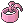
Rosa SchalItem (Tragen) hebt Anmut-Wert für den Wettbewerb.100 ₽ RoselbeereItem (Tragen) schadet dem Gegner bei Spezial-Attacke.20 ₽
RoselbeereItem (Tragen) schadet dem Gegner bei Spezial-Attacke.20 ₽ RosenrauchItem (Tragen) verstärkt Pflanzen-Attacken.2.000 ₽
RosenrauchItem (Tragen) verstärkt Pflanzen-Attacken.2.000 ₽ RospelbeereItem (Tragen) mildert sehr effektive Kampf-Attacke.20 ₽
RospelbeereItem (Tragen) mildert sehr effektive Kampf-Attacke.20 ₽- Rote FlöteEine gläserne Flöte, die Pokémon von Anziehung heilt.20 ₽
 Rote HautHaut vom roten Garados.
Rote HautHaut vom roten Garados. Roter SchalItem (Tragen) hebt Cool.-Wert für den Wettbewerb.100 ₽
Roter SchalItem (Tragen) hebt Cool.-Wert für den Wettbewerb.100 ₽ Ruhig-MinzeMinze, die Sp. Angr. schneller, Init. langsamer steigert.20.000 ₽
Ruhig-MinzeMinze, die Sp. Angr. schneller, Init. langsamer steigert.20.000 ₽ Sacht-MinzeMinze, die Sp. Vert. schneller, Sp. Angr. langsamer steigert.20.000 ₽
Sacht-MinzeMinze, die Sp. Vert. schneller, Sp. Angr. langsamer steigert.20.000 ₽ SananabeereSäe Pokériegel-Zutat in Lehmboden, damit Sanana wächst.20 ₽
SananabeereSäe Pokériegel-Zutat in Lehmboden, damit Sanana wächst.20 ₽ SanftglockeItem (Tragen) besänftigt und fördert Sympathie.5.000 ₽
SanftglockeItem (Tragen) besänftigt und fördert Sympathie.5.000 ₽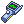
ScannerEin Gerät, das im Schiffswrack gefunden wurde. ScharfklaueItem (Tragen) erhöht die Volltrefferquote.15.000 ₽
ScharfklaueItem (Tragen) erhöht die Volltrefferquote.15.000 ₽ ScharfzahnItem (Tragen) kann Gegner zurückweichen lassen.15.000 ₽
ScharfzahnItem (Tragen) kann Gegner zurückweichen lassen.15.000 ₽ SchattenglasItem (Tragen) verstärkt Unlicht-Attacken.3.000 ₽
SchattenglasItem (Tragen) verstärkt Unlicht-Attacken.3.000 ₽- Scheu-MinzeMinze, die Init. schneller, Angr. langsamer steigert.20.000 ₽
 ScheuchrauchItem (Tragen) kann wilde Pokémon abhalten.6.000 ₽
ScheuchrauchItem (Tragen) kann wilde Pokémon abhalten.6.000 ₽ SchiggykanneEine Kanne, um Bäume zu wässern.
SchiggykanneEine Kanne, um Bäume zu wässern. SchillerpinErhöht die Chance auf schillernde Pokémon.
SchillerpinErhöht die Chance auf schillernde Pokémon. SchlohkrautItem (Tragen) hebt jede Statusveränderung auf.20.000 ₽
SchlohkrautItem (Tragen) hebt jede Statusveränderung auf.20.000 ₽- SchneeballItem (Tragen) hebt Angr. bei Eis-Attacke.5.000 ₽
 SchrägrauchItem (Tragen) verstärkt Psycho-Attacken.2.000 ₽
SchrägrauchItem (Tragen) verstärkt Psycho-Attacken.2.000 ₽ SchukebeereItem (Tragen) mildert sehr effektive Boden-Attacke.20 ₽
SchukebeereItem (Tragen) mildert sehr effektive Boden-Attacke.20 ₽ SchutzHält 100 Schritte lang schwache, wilde Pokémon ab.400 ₽
SchutzHält 100 Schritte lang schwache, wilde Pokémon ab.400 ₽ SchutzbandItem (Tragen) kann wilde Pokémon abhalten.5.000 ₽
SchutzbandItem (Tragen) kann wilde Pokémon abhalten.5.000 ₽ SchützerSchützendes Item. Löst eine Entwicklung aus.20.000 ₽
SchützerSchützendes Item. Löst eine Entwicklung aus.20.000 ₽- Schw. FlöteEine gläserne Flöte, die wilde Pokémon abhält.20 ₽
 SchwarzaugitSchwarzer Stein. Löst eine Entwicklung aus.20.000 ₽
SchwarzaugitSchwarzer Stein. Löst eine Entwicklung aus.20.000 ₽ SchwarzgurtItem (Tragen) verstärkt Kampf-Attacken.3.000 ₽
SchwarzgurtItem (Tragen) verstärkt Kampf-Attacken.3.000 ₽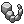
SchwerschweifItem (Tragen) lässt den Träger langsamer agieren.20.000 ₽ Scope-LinseItem (Tragen) erhöht die Volltrefferquote.15.000 ₽
Scope-LinseItem (Tragen) erhöht die Volltrefferquote.15.000 ₽ SeegesangItem (Tragen) füllt im Kampf langsam KP wieder auf.20.000 ₽
SeegesangItem (Tragen) füllt im Kampf langsam KP wieder auf.20.000 ₽ SeelentauStärkt Psycho- und Drachen-Attacken von Latios/Latias.
SeelentauStärkt Psycho- und Drachen-Attacken von Latios/Latias. SeerauchItem (Tragen) verstärkt Wasser-Attacken.2.000 ₽
SeerauchItem (Tragen) verstärkt Wasser-Attacken.2.000 ₽ SeidenschalItem (Tragen) verstärkt Normal-Attacken.3.000 ₽
SeidenschalItem (Tragen) verstärkt Normal-Attacken.3.000 ₽ SetangbeereMacht freundlicher, senkt Angr.-Basiswert.20 ₽
SetangbeereMacht freundlicher, senkt Angr.-Basiswert.20 ₽- SilberflügelEine seltsame silberne Feder.
- SilberstaubItem (Tragen) verbessert Käfer-Attacken.3.000 ₽
 Silph ScopeLinse, mit der unsichtbare Pokémon sichtbar werden.
Silph ScopeLinse, mit der unsichtbare Pokémon sichtbar werden. SinelbeereItem (Tragen) füllt KP im Kampf um 10 Punkte auf.20 ₽
SinelbeereItem (Tragen) füllt KP im Kampf um 10 Punkte auf.20 ₽- SkurriloskulpturSkulptur, die ein Pokémon aus Alola darstellt.3.000 ₽
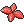
Solo-MinzeMinze, die Angr. schneller, Vert. langsamer steigert.20.000 ₽ SonderbonbonHebt den Level eines Pokémon um eins an.10.000 ₽
SonderbonbonHebt den Level eines Pokémon um eins an.10.000 ₽ SonnensteinLöst bei bestimmten Pokémon die Entwicklung aus.10.000 ₽
SonnensteinLöst bei bestimmten Pokémon die Entwicklung aus.10.000 ₽ SprudelEin Mineralwasser, das die KP um 50 Punkte auffüllt.300 ₽
SprudelEin Mineralwasser, das die KP um 50 Punkte auffüllt.300 ₽ SteinknochenSehr seltener Knochen von hohem Wert.5.000 ₽
SteinknochenSehr seltener Knochen von hohem Wert.5.000 ₽ SteinrauchItem (Tragen) verstärkt Gestein-Attacken.2.000 ₽
SteinrauchItem (Tragen) verstärkt Gestein-Attacken.2.000 ₽ SternenstaubSchöner, roter Sand, der von großem Wert ist.3.000 ₽
SternenstaubSchöner, roter Sand, der von großem Wert ist.3.000 ₽ SternenstückRoter Edelstein von hohem Wert.12.000 ₽
SternenstückRoter Edelstein von hohem Wert.12.000 ₽ Still-MinzeMinze, die Sp. Vert. schneller, Angr. langsamer steigert.20.000 ₽
Still-MinzeMinze, die Sp. Vert. schneller, Angr. langsamer steigert.20.000 ₽ StromisiererElektro-Schachtel. Löst eine Entwicklung aus.20.000 ₽
StromisiererElektro-Schachtel. Löst eine Entwicklung aus.20.000 ₽ Super-LockparfümLockt 200 Schritte lang wilde Pokémon an.700 ₽
Super-LockparfümLockt 200 Schritte lang wilde Pokémon an.700 ₽ SuperangelDie beste Angel, um nach Pokémon zu fischen.
SuperangelDie beste Angel, um nach Pokémon zu fischen. SuperballBall mit guter Erfolgsquote. Besser als ein Pokéball.400 ₽
SuperballBall mit guter Erfolgsquote. Besser als ein Pokéball.400 ₽ SuperschutzHält 200 Schritte lang schwache, wilde Pokémon ab.700 ₽
SuperschutzHält 200 Schritte lang schwache, wilde Pokémon ab.700 ₽ SupertrankFüllt die KP eines Pokémon um 60 Punkte auf.700 ₽
SupertrankFüllt die KP eines Pokémon um 60 Punkte auf.700 ₽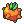
TamotbeereMacht freundlicher, senkt Init.-Basiswert.20 ₽ TanigabeereItem (Tragen) mildert sehr effektive Käfer-Attacke.20 ₽
TanigabeereItem (Tragen) mildert sehr effektive Käfer-Attacke.20 ₽ TarabeereItem (Tragen) hebt Sp. Vert. bei Spezial-Attacke.20 ₽
TarabeereItem (Tragen) hebt Sp. Vert. bei Spezial-Attacke.20 ₽ TarnumhangItem (Tragen) schützt vor Zusatzeffekten.20.000 ₽
TarnumhangItem (Tragen) schützt vor Zusatzeffekten.20.000 ₽ TauchballBall fängt besser Pokémon auf dem Meeresgrund.1.000 ₽
TauchballBall fängt besser Pokémon auf dem Meeresgrund.1.000 ₽ TeeTee, der von einer alten Dame zubereitet wird.
TeeTee, der von einer alten Dame zubereitet wird.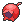
TerirobeereItem (Tragen) mildert sehr effektive Drachen-Attacke.20 ₽ TimerballBall wird effektiver, je länger der Kampf dauert.1.000 ₽
TimerballBall wird effektiver, je länger der Kampf dauert.1.000 ₽ TM01 Power-PunchStark. Pokémon erschrickt vielleicht bei gegn. Attacke.3.000 ₽
TM01 Power-PunchStark. Pokémon erschrickt vielleicht bei gegn. Attacke.3.000 ₽ TM02 DrachenklaueGegner wird mit langen, scharfen Krallen attackiert.3.000 ₽
TM02 DrachenklaueGegner wird mit langen, scharfen Krallen attackiert.3.000 ₽ TM03 AquawelleEine Ultraschallwelle, die den Gegner verwirren kann.3.000 ₽
TM03 AquawelleEine Ultraschallwelle, die den Gegner verwirren kann.3.000 ₽ TM04 GedankengutVerstärkt Sp. Angr. und Sp. Vert. durch Konzentration.3.000 ₽
TM04 GedankengutVerstärkt Sp. Angr. und Sp. Vert. durch Konzentration.3.000 ₽ TM05 BrüllerBrüller schlägt Gegner in die Flucht und beendet Kampf.1.000 ₽
TM05 BrüllerBrüller schlägt Gegner in die Flucht und beendet Kampf.1.000 ₽ TM06 ToxinVergiftet den Gegner und schadet ihm zunehmend.3.000 ₽
TM06 ToxinVergiftet den Gegner und schadet ihm zunehmend.3.000 ₽ TM07 HagelsturmErzeugt Hagelsturm, der allen außer Eis schadet.3.000 ₽
TM07 HagelsturmErzeugt Hagelsturm, der allen außer Eis schadet.3.000 ₽ TM08 ProtzerStärkt den Körper. So steigen Angr. und Vert.3.000 ₽
TM08 ProtzerStärkt den Körper. So steigen Angr. und Vert.3.000 ₽ TM09 KugelsaatBeschießt den Gegner mit 2 bis 5 Samen auf einmal.3.000 ₽
TM09 KugelsaatBeschießt den Gegner mit 2 bis 5 Samen auf einmal.3.000 ₽ TM10 KraftreserveDie Stärke dieser Attacke hängt vom jew. Pokémon ab.3.000 ₽
TM10 KraftreserveDie Stärke dieser Attacke hängt vom jew. Pokémon ab.3.000 ₽ TM11 SonnentagVerstärkt Feuer-Attacken über 5 Runden.2.000 ₽
TM11 SonnentagVerstärkt Feuer-Attacken über 5 Runden.2.000 ₽ TM12 VerhöhnerReizt den Gegner, sodass er nur Angriffe einsetzt.3.000 ₽
TM12 VerhöhnerReizt den Gegner, sodass er nur Angriffe einsetzt.3.000 ₽ TM13 EisstrahlFeuert eisigen Strahl, Chance auf einfrieren.3.000 ₽
TM13 EisstrahlFeuert eisigen Strahl, Chance auf einfrieren.3.000 ₽ TM14 BlizzardSchnee- und Wind Attacke. Chance auf einfrieren.10.000 ₽
TM14 BlizzardSchnee- und Wind Attacke. Chance auf einfrieren.10.000 ₽ TM15 HyperstrahlStark, muss sich in der nächsten Runde aufladen.10.000 ₽
TM15 HyperstrahlStark, muss sich in der nächsten Runde aufladen.10.000 ₽ TM16 LichtschildWand aus Licht, die Schaden des Sp. Angr. verringert.10.000 ₽
TM16 LichtschildWand aus Licht, die Schaden des Sp. Angr. verringert.10.000 ₽- TM17 SchutzschildSchützt, könnte aber bei häufigem Einsatz versagen.10.000 ₽
 TM18 RegentanzVerstärkt Wasser-Attacken über 5 Runden.2.000 ₽
TM18 RegentanzVerstärkt Wasser-Attacken über 5 Runden.2.000 ₽ TM19 GigasaugerStiehlt dem Gegner die Hälfte des Schadens als KP.3.000 ₽
TM19 GigasaugerStiehlt dem Gegner die Hälfte des Schadens als KP.3.000 ₽ TM20 BodyguardMystische Macht, verhindert Statusveränderungen.3.000 ₽
TM20 BodyguardMystische Macht, verhindert Statusveränderungen.3.000 ₽ TM21 FrustrationJe unbeliebter der Trainer, desto größer die Wirkung.1.000 ₽
TM21 FrustrationJe unbeliebter der Trainer, desto größer die Wirkung.1.000 ₽ TM22 SolarstrahlErst wird Sonnenlicht absorbiert, dann erfolgt Angr.10.000 ₽
TM22 SolarstrahlErst wird Sonnenlicht absorbiert, dann erfolgt Angr.10.000 ₽ TM23 EisenschweifSchlag mit harter Rute. Kann gleichz. Vert.-Wert senken.3.000 ₽
TM23 EisenschweifSchlag mit harter Rute. Kann gleichz. Vert.-Wert senken.3.000 ₽ TM24 DonnerblitzStarke Elektro-Attacke. Kann Paralyse bewirken.3.000 ₽
TM24 DonnerblitzStarke Elektro-Attacke. Kann Paralyse bewirken.3.000 ₽ TM25 DonnerMächtiger Donnerschlag, der Paralyse bewirken kann.10.000 ₽
TM25 DonnerMächtiger Donnerschlag, der Paralyse bewirken kann.10.000 ₽ TM26 ErdbebenStarkes Beben. Hat keinen Einfluss auf fliegende Gegner.3.000 ₽
TM26 ErdbebenStarkes Beben. Hat keinen Einfluss auf fliegende Gegner.3.000 ₽ TM27 RückkehrJe beliebter der Trainer, desto größer die Wirkung.1.000 ₽
TM27 RückkehrJe beliebter der Trainer, desto größer die Wirkung.1.000 ₽ TM28 SchauflerErst gräbt sich Angreifer ein, dann erfolgt Angriff.2.000 ₽
TM28 SchauflerErst gräbt sich Angreifer ein, dann erfolgt Angriff.2.000 ₽ TM29 PsychokineseStarke Psycho-Attacke, die Sp. Vert. senken kann.2.000 ₽
TM29 PsychokineseStarke Psycho-Attacke, die Sp. Vert. senken kann.2.000 ₽ TM30 SpukballDunkler Klumpen, der Sp. Vert. senken kann.3.000 ₽
TM30 SpukballDunkler Klumpen, der Sp. Vert. senken kann.3.000 ₽ TM31 DurchbruchZerstört Barrieren wie Schutzschild, fügt Schaden zu.3.000 ₽
TM31 DurchbruchZerstört Barrieren wie Schutzschild, fügt Schaden zu.3.000 ₽ TM32 DoppelteamVirtueller Doppelgänger. Erhöht den Flucht-Wert.2.000 ₽
TM32 DoppelteamVirtueller Doppelgänger. Erhöht den Flucht-Wert.2.000 ₽ TM33 ReflektorWand aus Licht, die physische Attacken schwächt.10.000 ₽
TM33 ReflektorWand aus Licht, die physische Attacken schwächt.10.000 ₽ TM34 SchockwelleFügt Gegner einen Stromschlag zu, der nie verfehlt.3.000 ₽
TM34 SchockwelleFügt Gegner einen Stromschlag zu, der nie verfehlt.3.000 ₽ TM35 FlammenwurfEntfesselt Feuerstrahl, der Gegner verbrennen kann.3.000 ₽
TM35 FlammenwurfEntfesselt Feuerstrahl, der Gegner verbrennen kann.3.000 ₽ TM36 MatschbombeBewirft Gegner mit Matsch, der ihn vergiften kann.1.000 ₽
TM36 MatschbombeBewirft Gegner mit Matsch, der ihn vergiften kann.1.000 ₽ TM37 SandsturmSandsturm trifft etliche Runden lang die Kämpfenden.2.000 ₽
TM37 SandsturmSandsturm trifft etliche Runden lang die Kämpfenden.2.000 ₽ TM38 FeuersturmKraftvolle Feuer-Attacke, die Gegner verbrennen kann.10.000 ₽
TM38 FeuersturmKraftvolle Feuer-Attacke, die Gegner verbrennen kann.10.000 ₽ TM39 FelsgrabBegräbt Gegner mit Steinen. Kann Init.-Wert senken.3.000 ₽
TM39 FelsgrabBegräbt Gegner mit Steinen. Kann Init.-Wert senken.3.000 ₽ TM40 Aero-AssEine schnelle Attacke, die unausweichlich ist.3.000 ₽
TM40 Aero-AssEine schnelle Attacke, die unausweichlich ist.3.000 ₽ TM41 FolterknechtBlockiert gerade verwendete Attacke des Gegners.3.000 ₽
TM41 FolterknechtBlockiert gerade verwendete Attacke des Gegners.3.000 ₽ TM42 FassadeStärkt Angr.-Wert bei Gift, Brand oder Paralyse.3.000 ₽
TM42 FassadeStärkt Angr.-Wert bei Gift, Brand oder Paralyse.3.000 ₽ TM43 GeheimpowerDie Umgebung beeinflusst die Art der Attacke.3.000 ₽
TM43 GeheimpowerDie Umgebung beeinflusst die Art der Attacke.3.000 ₽ TM44 ErholungPokémon schläft 2 Runden. Füllt KP und heilt Status.3.000 ₽
TM44 ErholungPokémon schläft 2 Runden. Füllt KP und heilt Status.3.000 ₽ TM45 AnziehungErschwert Angriff auf Gegner des anderen Geschlechts.3.000 ₽
TM45 AnziehungErschwert Angriff auf Gegner des anderen Geschlechts.3.000 ₽ TM46 RaubBeim Angriff wird Item des Gegners evtl. gestohlen.3.000 ₽
TM46 RaubBeim Angriff wird Item des Gegners evtl. gestohlen.3.000 ₽ TM47 StahlflügelDen Gegner treffen stählerne Flügelschläge.3.000 ₽
TM47 StahlflügelDen Gegner treffen stählerne Flügelschläge.3.000 ₽ TM48 WertewechselAustausch der Fähigkeiten bei der nächsten Attacke.3.000 ₽
TM48 WertewechselAustausch der Fähigkeiten bei der nächsten Attacke.3.000 ₽ TM49 ÜbernahmeStiehlt die Effekte der gegnerischen Attacke.3.000 ₽
TM49 ÜbernahmeStiehlt die Effekte der gegnerischen Attacke.3.000 ₽ TM50 HitzekollerHöchste Kraft, aber senkt Sp. Angr. enorm.3.000 ₽
TM50 HitzekollerHöchste Kraft, aber senkt Sp. Angr. enorm.3.000 ₽ TM51 RuheortFüllt die KP des Anwenders um die Hälfte auf.3.000 ₽
TM51 RuheortFüllt die KP des Anwenders um die Hälfte auf.3.000 ₽ TM52 FokusstoßVolle Kraft. Kann Sp. Vert. des Gegners senken.10.000 ₽
TM52 FokusstoßVolle Kraft. Kann Sp. Vert. des Gegners senken.10.000 ₽ TM53 EnergieballAngriff mit Naturkraft. Kann Sp. Vert. senken.3.000 ₽
TM53 EnergieballAngriff mit Naturkraft. Kann Sp. Vert. senken.3.000 ₽ TM54 TrugschlagAttacke, die dem Gegner mindestens 1 KP lässt.3.000 ₽
TM54 TrugschlagAttacke, die dem Gegner mindestens 1 KP lässt.3.000 ₽ TM55 LakeDoppelter Schaden bei Gegnern mit halben KP.3.000 ₽
TM55 LakeDoppelter Schaden bei Gegnern mit halben KP.3.000 ₽ TM56 SchleuderDie Wirkung hängt vom getragenen Item ab.3.000 ₽
TM56 SchleuderDie Wirkung hängt vom getragenen Item ab.3.000 ₽ TM57 LadestrahlElektrostrahl. Kann Sp. Angr. erhöhen.3.000 ₽
TM57 LadestrahlElektrostrahl. Kann Sp. Angr. erhöhen.3.000 ₽ TM58 AusdauerÜbersteht 1 Runde jede Attacke mit mind. 1 KP.3.000 ₽
TM58 AusdauerÜbersteht 1 Runde jede Attacke mit mind. 1 KP.3.000 ₽- TM59 DrachenpulsErzeugt eine Schockwelle, die dem Gegner schadet.3.000 ₽
 TM60 AbleithiebAttacke, die den halben Schaden als KP absorbiert.3.000 ₽
TM60 AbleithiebAttacke, die den halben Schaden als KP absorbiert.3.000 ₽ TM61 IrrlichtFügt dem Gegner mit heißem Feuer Verbrennung zu.3.000 ₽
TM61 IrrlichtFügt dem Gegner mit heißem Feuer Verbrennung zu.3.000 ₽ TM62 SilberhauchPuder-Attacke, die alle Statuswerte heben kann.3.000 ₽
TM62 SilberhauchPuder-Attacke, die alle Statuswerte heben kann.3.000 ₽ TM63 ItemsperreHindert den Gegner am Einsatz von Items.3.000 ₽
TM63 ItemsperreHindert den Gegner am Einsatz von Items.3.000 ₽ TM64 ExplosionFügt hohen Schaden zu, der Anwender wird besiegt.3.000 ₽
TM64 ExplosionFügt hohen Schaden zu, der Anwender wird besiegt.3.000 ₽ TM65 DunkelklaueSchlag mit Schattenklaue. Hohe Volltrefferquote.3.000 ₽
TM65 DunkelklaueSchlag mit Schattenklaue. Hohe Volltrefferquote.3.000 ₽ TM66 GegenstoßAttacke, die stärker wird, wenn man zuletzt agiert.3.000 ₽
TM66 GegenstoßAttacke, die stärker wird, wenn man zuletzt agiert.3.000 ₽ TM67 AufbereitungVerwertet ein gebrauchtes Item ein zweites Mal.3.000 ₽
TM67 AufbereitungVerwertet ein gebrauchtes Item ein zweites Mal.3.000 ₽ TM68 GigastoßStark, aber der Anwender bleibt 1 Runde starr.3.000 ₽
TM68 GigastoßStark, aber der Anwender bleibt 1 Runde starr.3.000 ₽ TM69 SteinpoliturPoliert den Körper und hebt so Init. stark.3.000 ₽
TM69 SteinpoliturPoliert den Körper und hebt so Init. stark.3.000 ₽ TM70 KraxlerWuchtiger Angriff, der Gegner verwirren kann.3.000 ₽
TM70 KraxlerWuchtiger Angriff, der Gegner verwirren kann.3.000 ₽ TM71 SteinkanteSticht mit Steinen zu. Hohe Volltrefferquote.3.000 ₽
TM71 SteinkanteSticht mit Steinen zu. Hohe Volltrefferquote.3.000 ₽ TM72 LawineAttacke agiert zuletzt, wird bei Treffer stärker.3.000 ₽
TM72 LawineAttacke agiert zuletzt, wird bei Treffer stärker.3.000 ₽ TM73 DonnerwelleSchwacher Stromstoß, der den Gegner paralysiert.3.000 ₽
TM73 DonnerwelleSchwacher Stromstoß, der den Gegner paralysiert.3.000 ₽ TM74 GyroballSchneller Wirbel, der schnelle Gegner härter trifft.3.000 ₽
TM74 GyroballSchneller Wirbel, der schnelle Gegner härter trifft.3.000 ₽ TM75 SchwerttanzEin Kampftanz, der den Angr.-Wert stark hebt.3.000 ₽
TM75 SchwerttanzEin Kampftanz, der den Angr.-Wert stark hebt.3.000 ₽ TM76 TarnsteineLegt Steine aus, die wechselnde Gegner verletzen.3.000 ₽
TM76 TarnsteineLegt Steine aus, die wechselnde Gegner verletzen.3.000 ₽ TM77 Psycho-PlusKopiert die Statusänderungen des Gegners.3.000 ₽
TM77 Psycho-PlusKopiert die Statusänderungen des Gegners.3.000 ₽ TM78 LiebreizSenkt Sp. Angr. des anderen Geschlechts stark.3.000 ₽
TM78 LiebreizSenkt Sp. Angr. des anderen Geschlechts stark.3.000 ₽ TM79 FinsterauraAngriff mit übler Aura. Kann zurückschrecken lassen.3.000 ₽
TM79 FinsterauraAngriff mit übler Aura. Kann zurückschrecken lassen.3.000 ₽ TM80 SteinhagelWirft große Felsen. Gegner kann zurückschrecken.3.000 ₽
TM80 SteinhagelWirft große Felsen. Gegner kann zurückschrecken.3.000 ₽ TM81 KreuzschereSchlitzt den Gegner mit gekreuzten Klingen.3.000 ₽
TM81 KreuzschereSchlitzt den Gegner mit gekreuzten Klingen.3.000 ₽ TM82 SchlafredeSetzt im Schlaf zufällig eine Attacke ein.3.000 ₽
TM82 SchlafredeSetzt im Schlaf zufällig eine Attacke ein.3.000 ₽ TM83 BeerenkräfteDie Wirkung hängt von der getragenen Beere ab.10.000 ₽
TM83 BeerenkräfteDie Wirkung hängt von der getragenen Beere ab.10.000 ₽ TM84 GifthiebStich-Attacke, die den Gegner vergiften kann.3.000 ₽
TM84 GifthiebStich-Attacke, die den Gegner vergiften kann.3.000 ₽ TM85 TraumfresserAbsorbiert Schaden an schlafenden Gegnern.3.000 ₽
TM85 TraumfresserAbsorbiert Schaden an schlafenden Gegnern.3.000 ₽ TM86 StrauchlerFessel-Attacke, die schweren Gegnern mehr schadet.3.000 ₽
TM86 StrauchlerFessel-Attacke, die schweren Gegnern mehr schadet.3.000 ₽ TM87 AngebereiVerwirrt den Gegner, hebt aber seinen Angr. stark.3.000 ₽
TM87 AngebereiVerwirrt den Gegner, hebt aber seinen Angr. stark.3.000 ₽ TM88 PflückerFrisst die Beere des Gegners und nutzt ihre Wirkung.3.000 ₽
TM88 PflückerFrisst die Beere des Gegners und nutzt ihre Wirkung.3.000 ₽ TM89 KehrtwendeFügt Schaden zu, dann wechselt der Anwender aus.3.000 ₽
TM89 KehrtwendeFügt Schaden zu, dann wechselt der Anwender aus.3.000 ₽ TM90 DelegatorErzeugt einen Doppelgänger aus 1/4 der maximalen KP.3.000 ₽
TM90 DelegatorErzeugt einen Doppelgänger aus 1/4 der maximalen KP.3.000 ₽ TM91 LichtkanoneLichtstoß, der Sp. Vert. senken kann.3.000 ₽
TM91 LichtkanoneLichtstoß, der Sp. Vert. senken kann.3.000 ₽ TM92 BizarroraumLangsame Pokémon agieren 5 Runden lang zuerst.3.000 ₽
TM92 BizarroraumLangsame Pokémon agieren 5 Runden lang zuerst.3.000 ₽ Top-ÄtherFüllt AP einer Attacke vollständig auf.2.000 ₽
Top-ÄtherFüllt AP einer Attacke vollständig auf.2.000 ₽ Top-BeleberBelebt Pokémon und füllt KP vollständig wieder auf.4.000 ₽
Top-BeleberBelebt Pokémon und füllt KP vollständig wieder auf.4.000 ₽ Top-ElixierFüllt alle AP eines Pokémon vollständig auf.4.500 ₽
Top-ElixierFüllt alle AP eines Pokémon vollständig auf.4.500 ₽ Top-GenesungStellt KP und Status eines Pokémon wieder her.3.000 ₽
Top-GenesungStellt KP und Status eines Pokémon wieder her.3.000 ₽- Top-LockparfümLockt 250 Schritte lang wilde Pokémon an.900 ₽
 Top-SchutzHält 250 Schritte lang schwache, wilde Pokémon ab.900 ₽
Top-SchutzHält 250 Schritte lang schwache, wilde Pokémon ab.900 ₽ Top-TrankFüllt die KP vollständig auf.2.500 ₽
Top-TrankFüllt die KP vollständig auf.2.500 ₽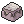
TorfblockBlock aus Torf. Löst eine Entwicklung aus.20.000 ₽ Toxik-OrbItem (Tragen) vergiftet den Träger im Kampf schwer.15.000 ₽
Toxik-OrbItem (Tragen) vergiftet den Träger im Kampf schwer.15.000 ₽ TrankFüllt die KP eines Pokémon um 20 Punkte auf.200 ₽
TrankFüllt die KP eines Pokémon um 20 Punkte auf.200 ₽ TraumbriefBrief mit Abbildung des Pokémon, das ihn trägt.50 ₽
TraumbriefBrief mit Abbildung des Pokémon, das ihn trägt.50 ₽ TriperleSehr große Perlen von sehr hohem Wert.20.000 ₽
TriperleSehr große Perlen von sehr hohem Wert.20.000 ₽ TropenbriefBrief (Tragen) mit Blubella-Aufdruck.50 ₽
TropenbriefBrief (Tragen) mit Blubella-Aufdruck.50 ₽ TsitrubeereItem (Tragen) füllt KP im Kampf um 30 Punkte auf.20 ₽
TsitrubeereItem (Tragen) füllt KP im Kampf um 30 Punkte auf.20 ₽ TurboballGut für schnelle, Feuer, Elektro und Kampf Pokémon.1.000 ₽
TurboballGut für schnelle, Feuer, Elektro und Kampf Pokémon.1.000 ₽- TurnierballBall, der nur beim Käferturnier eingesetzt wird.
- TüröffnerSchlüsselkarte für eine Tür im Funkturm.
 ÜberresteItem (Tragen) füllt im Kampf langsam KP wieder auf.20.000 ₽
ÜberresteItem (Tragen) füllt im Kampf langsam KP wieder auf.20.000 ₽ Up-GradeMysteriöse Box der Silph Co. Löst eine Entwicklung aus.20.000 ₽
Up-GradeMysteriöse Box der Silph Co. Löst eine Entwicklung aus.20.000 ₽ VitalkrautEin bitteres Kraut, das besiegte Pokémon belebt.2.800 ₽
VitalkrautEin bitteres Kraut, das besiegte Pokémon belebt.2.800 ₽ VM01 ZerschneiderGegner wird mit klingenscharfen Krallen attackiert.
VM01 ZerschneiderGegner wird mit klingenscharfen Krallen attackiert. VM02 FliegenPokémon fliegt hoch, dann erfolgt Luftangriff.
VM02 FliegenPokémon fliegt hoch, dann erfolgt Luftangriff. VM03 SurferEine riesige Flutwelle ergießt sich über den Gegner.
VM03 SurferEine riesige Flutwelle ergießt sich über den Gegner. VM04 StärkeDen Gegner trifft ein energiegeladener Kraftschlag.
VM04 StärkeDen Gegner trifft ein energiegeladener Kraftschlag. VM05 BlitzEin gleißender Lichtstrahl, der Genau. senken kann.
VM05 BlitzEin gleißender Lichtstrahl, der Genau. senken kann. VM06 ZertrümmererSteinbrecherische Attacke, die Vert.-Wert senken kann.
VM06 ZertrümmererSteinbrecherische Attacke, die Vert.-Wert senken kann. VM07 KaskadeMächtige Attacke, die Wasserfälle bezwingbar macht.
VM07 KaskadeMächtige Attacke, die Wasserfälle bezwingbar macht. VM08 WhirlpoolFängt den Gegner in einem tosenden Strudel.
VM08 WhirlpoolFängt den Gegner in einem tosenden Strudel. VM09 TaucherPokémon taucht ab, dann erfolgt Angriff aus der Tiefe.
VM09 TaucherPokémon taucht ab, dann erfolgt Angriff aus der Tiefe. WahlbandStärkt eine Attacke. Aber nur diese ist einsetzbar.100.000 ₽
WahlbandStärkt eine Attacke. Aber nur diese ist einsetzbar.100.000 ₽ WahlglasStärkt Sp. Angr. Aber nur eine Attacke ist einsetzbar.100.000 ₽
WahlglasStärkt Sp. Angr. Aber nur eine Attacke ist einsetzbar.100.000 ₽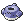
WailmerkanneEin Gegenstand zum Gießen von Pflanzen wie Beeren. WaldbriefBrief (Tragen) mit Bummelz-Aufdruck.50 ₽
WaldbriefBrief (Tragen) mit Bummelz-Aufdruck.50 ₽ WasmelbeereSäe Pokériegel-Zutat in Lehmboden, damit Wasmel wächst.20 ₽
WasmelbeereSäe Pokériegel-Zutat in Lehmboden, damit Wasmel wächst.20 ₽ WassersteinLöst bei bestimmten Pokémon die Entwicklung aus.10.000 ₽
WassersteinLöst bei bestimmten Pokémon die Entwicklung aus.10.000 ₽- WassertafelSteintafel (Tragen) verstärkt Wasser-Attacken.1.000 ₽
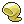
WechselhülleItem (Tragen) erlaubt sicheres Auswechseln.20.000 ₽ Weiße FlöteEine gläserne Flöte, die wilde Pokémon anzieht.20 ₽
Weiße FlöteEine gläserne Flöte, die wilde Pokémon anzieht.20 ₽ WellenbriefBrief (Tragen) mit Wailmer-Aufdruck.50 ₽
WellenbriefBrief (Tragen) mit Wailmer-Aufdruck.50 ₽ WellenrauchItem (Tragen) verstärkt Wasser-Attacken.2.000 ₽
WellenrauchItem (Tragen) verstärkt Wasser-Attacken.2.000 ₽ WerkschlüsselSchlüssel für Neu Malvenfroh unter Malvenfroh City.
WerkschlüsselSchlüssel für Neu Malvenfroh unter Malvenfroh City. WettbewerbskarteAusweis zur Teilnahme an Pokémon-Wettbewerben.
WettbewerbskarteAusweis zur Teilnahme an Pokémon-Wettbewerben. WiederballBall fängt besser bereits gefangene Pokémon.1.000 ₽
WiederballBall fängt besser bereits gefangene Pokémon.1.000 ₽- WiesentafelSteintafel (Tragen) verstärkt Pflanzen-Attacken.1.000 ₽
 WilbirbeereItem (Tragen) bewirkt Selbstheilung bei Frost.20 ₽
WilbirbeereItem (Tragen) bewirkt Selbstheilung bei Frost.20 ₽ WundersaatItem (Tragen) verstärkt Pflanzen-Attacken.3.000 ₽
WundersaatItem (Tragen) verstärkt Pflanzen-Attacken.3.000 ₽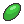
WunfrubeereItem (Tragen) hebt Genauigkeit in einer Notlage.20 ₽ WurzelfossilFossil eines uralten Pokémon, das in der Tiefsee lebte.
WurzelfossilFossil eines uralten Pokémon, das in der Tiefsee lebte. WüstenglasSchicke Brille, die die Augen vor Sandstürmen schützt.
WüstenglasSchicke Brille, die die Augen vor Sandstürmen schützt. WutkeksBeseitigt alle Statusprobleme eines Pokémon.350 ₽
WutkeksBeseitigt alle Statusprobleme eines Pokémon.350 ₽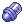
X-AbwehrHebt den Vert.-Wert stark für einen Kampf.2.000 ₽ X-AngriffHebt den Angr.-Wert stark für einen Kampf.1.000 ₽
X-AngriffHebt den Angr.-Wert stark für einen Kampf.1.000 ₽ X-SpezialHebt Sp. Angr. stark für einen Kampf.1.000 ₽
X-SpezialHebt Sp. Angr. stark für einen Kampf.1.000 ₽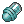
X-Spezial-Vert.Hebt Sp. Vert. stark für einen Kampf.2.000 ₽ X-TempoHebt den Init.-Wert stark für einen Kampf.1.000 ₽
X-TempoHebt den Init.-Wert stark für einen Kampf.1.000 ₽ X-TrefferHebt die Genauigkeit stark für einen Kampf.1.000 ₽
X-TrefferHebt die Genauigkeit stark für einen Kampf.1.000 ₽ YapabeereItem (Tragen) füllt KP auf, bewirkt evtl. Verwirrung.20 ₽
YapabeereItem (Tragen) füllt KP auf, bewirkt evtl. Verwirrung.20 ₽ Zart-MinzeMinze, die Sp. Vert. schneller, Vert. langsamer steigert.20.000 ₽
Zart-MinzeMinze, die Sp. Vert. schneller, Vert. langsamer steigert.20.000 ₽ ZauberascheBelebt und erfrischt alle besiegten Pokémon.50.000 ₽
ZauberascheBelebt und erfrischt alle besiegten Pokémon.50.000 ₽ ZauberwasserItem (Tragen) verstärkt Wasser-Attacken.3.000 ₽
ZauberwasserItem (Tragen) verstärkt Wasser-Attacken.3.000 ₽ ZigzagbriefBrief (Tragen) mit Zigzachs-Aufdruck.50 ₽
ZigzagbriefBrief (Tragen) mit Zigzachs-Aufdruck.50 ₽ ZinkHebt den Sp. Vert.-Wert eines Pokémon.10.000 ₽
ZinkHebt den Sp. Vert.-Wert eines Pokémon.10.000 ₽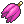
ZitarzbeereItem (Tragen) mildert sehr effektive Geist-Attacke.20 ₽ ZoomlinseItem (Tragen) erhöht Genauigkeit bei Zweitschlag.10.000 ₽
ZoomlinseItem (Tragen) erhöht Genauigkeit bei Zweitschlag.10.000 ₽